Lecture 15 — Part 6 Agentic AI
บทก่อนๆ ทำให้โมเดลทำนายหรือสร้างข้อความ บทนี้ให้โมเดลลงมือทำ คือเลือก tool เรียกข้อมูลจริง แล้วตัดสินใจขั้นต่อไปจากผลที่ได้ ตัวอย่างเดียวใช้ทั้งบทคือ agent บริการลูกค้าของร้านออนไลน์ ข้อมูลตัวอย่างคือ customer U1234 order A123 สถานะ Pending invoice $50 refund Pending โค้ดใช้ LangChain กับ LangGraph ซึ่งข้อสอบน่าจะถามแบบอ่านโค้ดแล้วบอกว่าใครทำอะไร
| คำถาม | คำตอบสั้น | อ่านที่ |
|---|---|---|
| agent ต่างจาก chatbot และ ML เดิมอย่างไร | เลือก action และใช้ tool ได้ ไม่ใช่แค่ทำนายหรือตอบข้อความ | ตอน 1 |
| agentic system มีส่วนประกอบอะไร | foundation model, tools, memory, knowledge base, orchestration | ตอน 2 |
| tool calling ทำงานอย่างไร | LLM เลือก tool และสร้าง argument · Python รันจริง | ตอน 3 |
| single tool กับ parallel ต่างกันอย่างไร | tool เดียว · หลาย tool อิสระรันพร้อมกัน | ตอน 4 |
| chain ใน LCEL เขียนอย่างไร | a | b | c output ก่อนหน้าเป็น input ถัดไป | ตอน 5 |
| graph ใน LangGraph มีอะไร | node, edge, conditional edge, state · context engineering · agent pattern · การประเมิน | ตอน 6 |
| foundation model | โมเดลขนาดใหญ่ที่ pretrain แล้ว เช่น LLM ใช้ซ้ำได้หลายงาน |
| tool | ความสามารถที่เรียกใช้ได้ เช่นฟังก์ชัน Python หรือ API |
| orchestration | ส่วนที่ประสานว่าเรียก model, tool, memory เมื่อไรและอย่างไร |
| tool call | คำขอแบบมีโครงสร้างที่ LLM สร้าง บอกชื่อ tool และ argument |
| state | ข้อมูลของ workflow ปัจจุบันที่ทุกขั้นอ่านและอัปเดตได้ |
ผู้ช่วยที่ตอบได้ว่า "ตรวจสถานะพัสดุได้ที่เว็บ" กับผู้ช่วยที่เปิดระบบดูให้แล้วบอกว่า "ส่งแล้วครับ" คนแรกพูด คนที่สองทำ agent คือคนที่สอง
Agentic AI ถูกเรียกว่าคลื่นที่สามของ AI: จากการทำนาย สู่การสร้าง สู่การลงมือทำเอง นิยามสามข้อ: เป็นแนวทางที่ให้ระบบ AI ให้เหตุผล วางแผน ตัดสินใจ และลงมือทำเพื่อบรรลุเป้าหมาย · ใช้ tool และระบบภายนอก แล้วปรับ action ถัดไปตามผลที่ได้ · ทำงานได้ด้วยความอิสระระดับหนึ่ง ลดการที่คนต้องสั่งทุกขั้น
AI agent คือระบบที่ตีความสภาพแวดล้อม ตัดสินใจ และลงมือทำเพื่อเป้าหมาย ต่างจาก automation ปกติตรงที่เลือก action ตามสถานการณ์ได้ ไม่ต้องเดินตามลำดับที่เขียนตายตัวอย่างเดียว
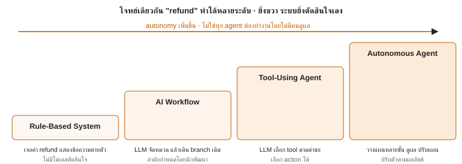
รูปนี้ไล่วิวัฒนาการสี่ขั้นด้วยโจทย์ refund เดียวกัน กล่องยิ่งขวายิ่งให้ระบบตัดสินใจเอง ประเด็นสำคัญคือ agent มีระดับความอิสระต่างกันได้ ไม่ใช่ทุก agent ต้องทำงานโดยไม่มีคนดูแล
| Traditional ML | Foundation model-based agent | |
|---|---|---|
| สร้างโมเดล | เทรนเฉพาะงาน | ใช้ foundation model ที่ pretrain แล้ว |
| ข้อมูลเทรน | ต้องมีข้อมูลเฉพาะงาน | บางงานไม่ต้องเทรนเพิ่ม |
| input | รูปแบบกำหนดไว้ | ภาษาธรรมชาติแบบยืดหยุ่น |
| output | prediction, class, ตัวเลข | ข้อความ, การตัดสินใจแบบมีโครงสร้าง, tool call |
| การตัดสินใจ | เขียนแยกต่างหาก | ใช้โมเดลช่วยเลือก action |
| ติดต่อภายนอก | ต้องเขียน logic เพิ่ม | ใช้ tool และ orchestration |
| ปรับตัว | จำกัดตามงานที่เทรน | เลือก action ต่างกันตามบริบท |
ML เดิม: ทายว่าลูกค้าจะขอ refund ไหม · agent: เข้าใจคำขอ refund ดึงข้อมูล order ตรวจสิทธิ์ แล้วบอกขั้นถัดไป · โมเดล ML เดิมยังใส่เข้าไปเป็น tool ของ agent ได้
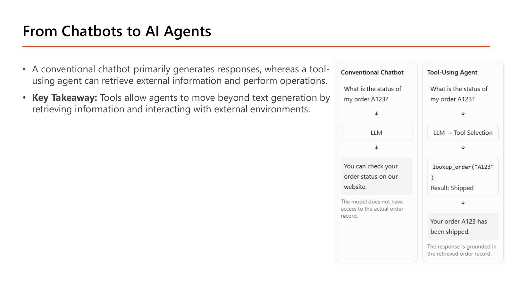
คำถามเดียวกัน "What is the status of my order A123?" chatbot ตอบได้แค่ให้ไปดูที่เว็บ เพราะไม่มีสิทธิ์เห็นข้อมูลจริง agent เรียก lookup_order("A123") ได้ผล Shipped แล้วตอบ "Your order A123 has been shipped." ซึ่งอิงข้อมูลจริง Key Takeaway: tool ทำให้ agent ไปไกลกว่าการสร้างข้อความ
agent ไม่จำเป็นต้องอิสระเต็มที่ · ML เดิมไม่ได้ถูกแทนที่ ใส่เป็น tool ได้ · chatbot เดิมสร้างคำตอบ agent ดึงข้อมูลและทำ operation ได้
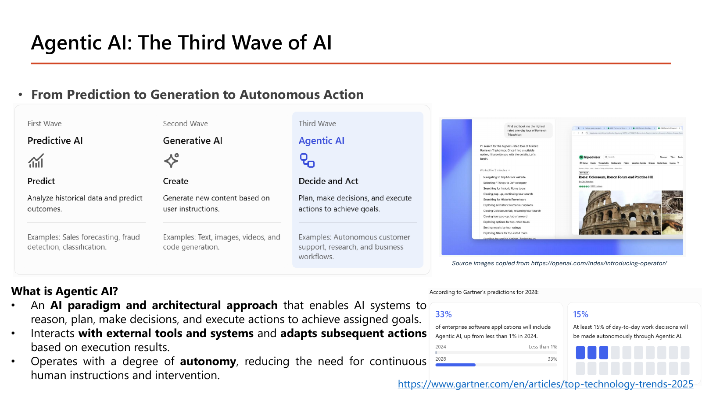
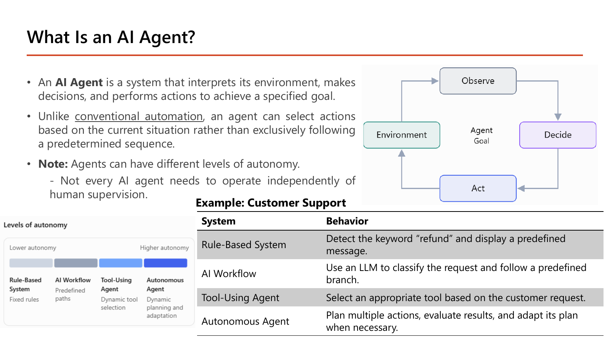
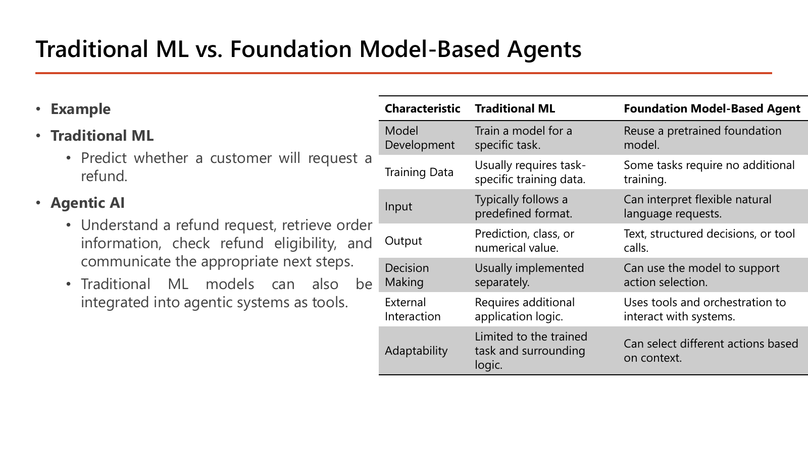
หลักการเลือกคือใช้วิธีที่ง่ายที่สุดที่แก้ปัญหาได้อย่างเชื่อถือได้ ขึ้นกับความซับซ้อน ความไม่แน่นอน และความจำเป็นต้องตัดสินใจแบบ dynamic
| วิธี | งานที่เหมาะ | ตัวอย่าง | dynamic planning | คาดเดาได้ | ซับซ้อน | ยืดหยุ่น |
|---|---|---|---|---|---|---|
| Traditional code | กฎตายตัว input คาดได้ | คำนวณยอด invoice | No | High | Low | Low |
| Deterministic workflow | ขั้นตอนและเงื่อนไขกำหนดไว้ | เช็คสถานะก่อนยกเลิก | Usually no | High | Low–Medium | Medium |
| Chatbot / RAG | ตอบจากเอกสาร | อธิบายนโยบาย refund | Not required | Variable | Medium | Medium |
| Autonomous agent | ต้องคิดตามบริบท วางแผน ปรับตัว | สืบเรื่องร้องเรียนแล้วตัดสิน action | Supported | Variable | Medium–High | High |
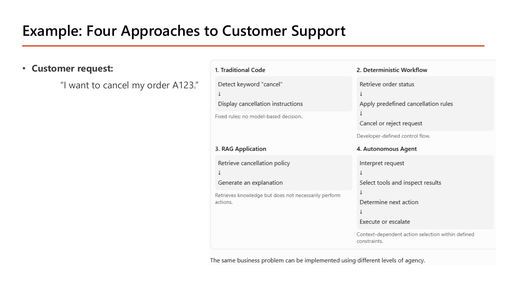
คำขอเดียวกันทำได้สี่ระดับ: code ตายตัวเจอคำ cancel ก็แสดงวิธียกเลิก · workflow ดึงสถานะแล้วใช้กฎยกเลิกหรือปฏิเสธ · RAG ดึงนโยบายการยกเลิกแล้วอธิบาย แต่ไม่ได้ทำ action · agent ตีความคำขอ เลือก tool ดูผล ตัดสินขั้นต่อไป แล้วทำหรือส่งต่อคน
RAG ดึงความรู้แต่ไม่จำเป็นต้องลงมือทำ · workflow คาดเดาได้สูงเพราะนักพัฒนากำหนดเส้นทาง · agent ไม่ใช่คำตอบที่ดีที่สุดเสมอ
traditional code เพราะกฎตายตัว input คาดได้ ไม่ต้องวางแผน
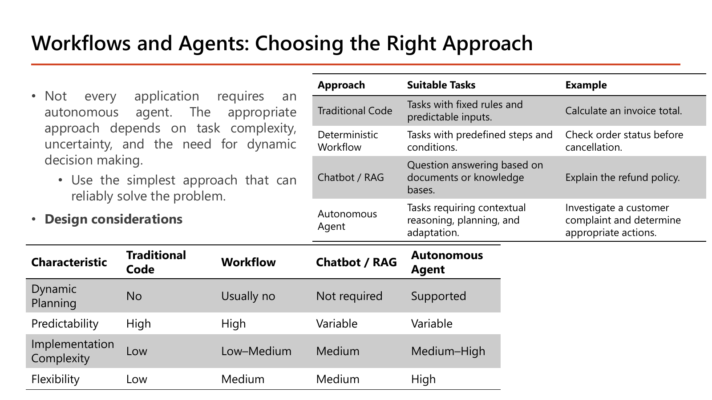
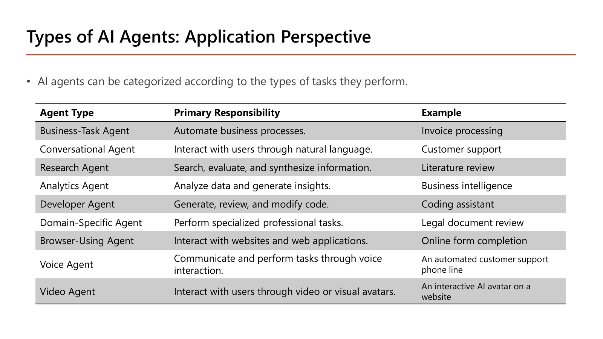
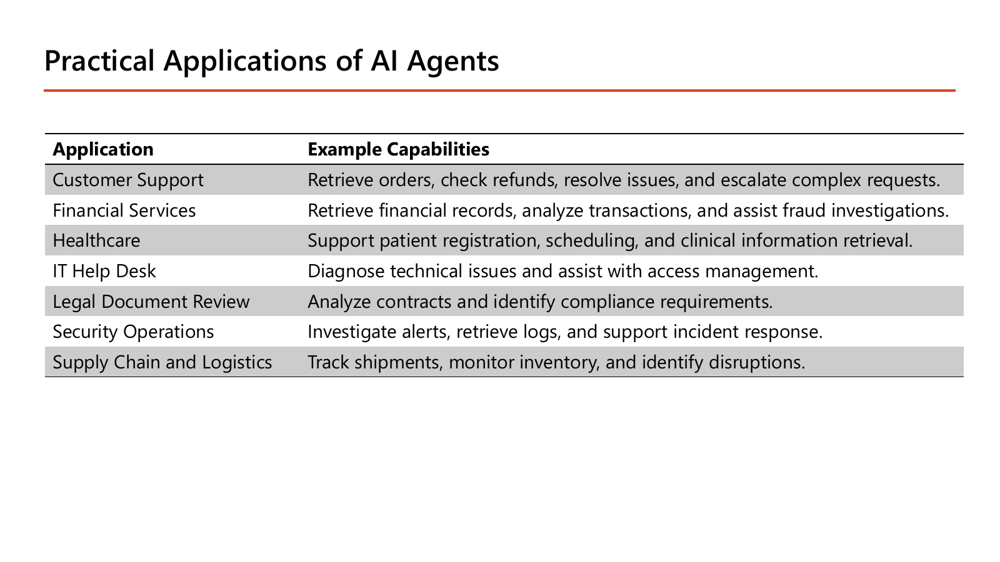
agent แบ่งตามงานได้: business-task เช่นประมวลผล invoice · conversational เช่น customer support · research เช่น literature review · analytics · developer เช่น coding assistant · domain-specific เช่นตรวจเอกสารกฎหมาย · browser-using เช่นกรอกฟอร์มบนเว็บ · voice เช่นคอลเซ็นเตอร์อัตโนมัติ · video เช่น avatar บนเว็บ งานจริงมีทั้ง customer support, การเงิน, สุขภาพ, IT help desk, security operations, supply chain
| ส่วน | หน้าที่ |
|---|---|
| Foundation model | ตีความคำขอ ให้เหตุผล เลือก action สร้างคำตอบ |
| Tools | ดึงข้อมูลและทำ operation |
| Memory | เก็บและดึงข้อมูลจาก interaction ก่อนหน้า |
| Knowledge base | ความรู้ภายนอกหรือความรู้เฉพาะโดเมน |
| Orchestration | ประสานการทำงานของทุกส่วน |
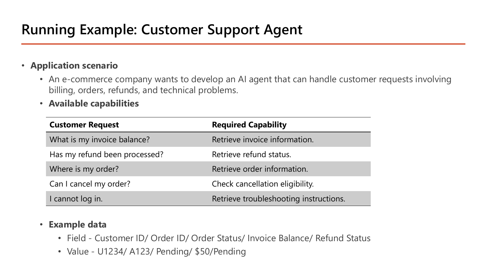
ร้าน e-commerce ต้องการ agent ตอบเรื่อง billing, order, refund และปัญหาเทคนิค แต่ละคำขอต้องใช้ความสามารถต่างกัน: invoice balance ต้องดึง invoice · refund ต้องดึงสถานะ refund · order อยู่ไหนต้องดึง order · ยกเลิกได้ไหมต้องเช็คสิทธิ์ · log in ไม่ได้ต้องดึงวิธีแก้
foundation model ทำหน้าที่ตัดสินใจ: เข้าใจเจตนา · จัดหมวด billing หรือ technical · เลือก tool เช่น get_refund_status() · สร้าง parameter คือดึง customer ID จากข้อความ · วางแผนว่าต้องทำอะไรบ้าง · สร้างคำตอบเป็นภาษาคน คำขอ "What is the refund status for customer U1234?" โมเดลสร้าง tool call แบบมีโครงสร้าง แล้ว orchestration layer เป็นคนตีความและรันฟังก์ชันจริง
โมเดลไม่ได้รันฟังก์ชันเอง แค่สร้าง tool call · orchestration เป็นคนรัน
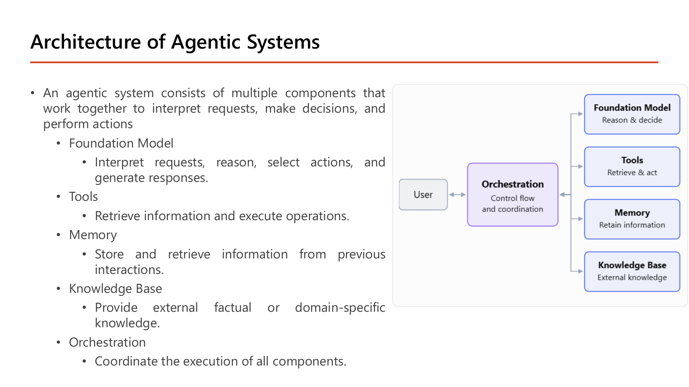
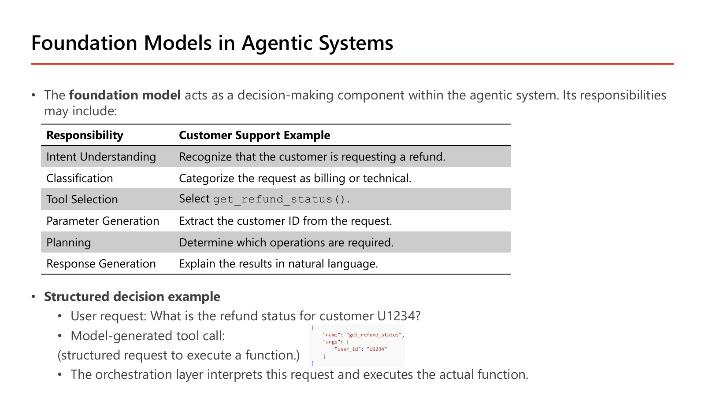
tool คือความสามารถที่ให้ agent ดึงข้อมูล คำนวณ และติดต่อระบบภายนอก ตัวอย่างเช่น get_invoice() ดึง invoice · get_refund_status() ดึงสถานะ refund · lookup_order() ดึง order
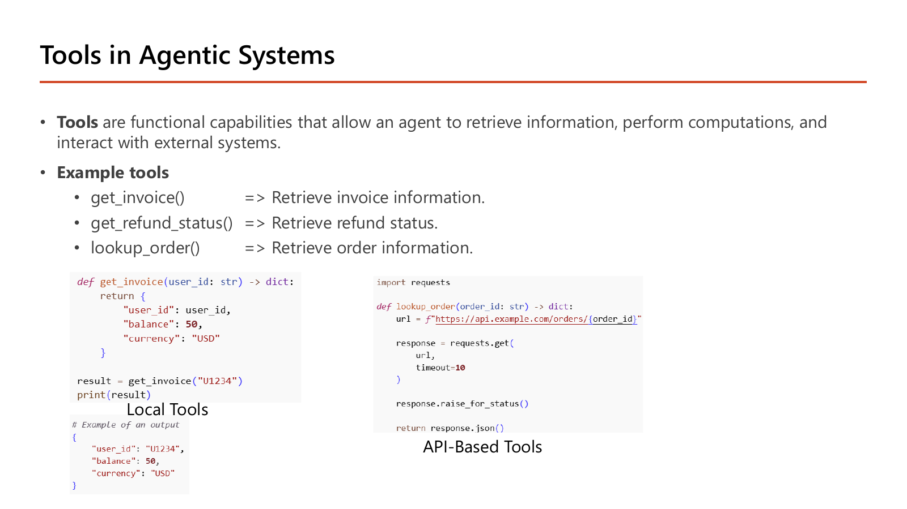
local tool get_invoice("U1234") คืน dict {"user_id": "U1234", "balance": 50, "currency": "USD"} ทำงานในเครื่องเรา API-based tool lookup_order เรียก requests.get ไปที่ api.example.com/orders พร้อม timeout=10 แล้วคืน response.json()
| ข้อจำกัดของ LLM | tool แก้อย่างไร |
|---|---|
| เข้าถึงข้อมูลธุรกิจส่วนตัวไม่ได้ | query ฐานข้อมูลลูกค้า |
| ความรู้อาจเก่า | ดึงข้อมูลปัจจุบันผ่าน API |
| คำนวณตัวเลขไม่น่าเชื่อถือ | รันฟังก์ชัน Python ที่ deterministic |
| แก้ไขระบบภายนอกเองไม่ได้ | ทำ operation ที่ได้รับอนุญาต |
| เข้าถึงบริการเฉพาะทางได้จำกัด | ต่อ tool เฉพาะโดเมน |
แบ่งตามที่ทำงาน: local tool ทำงานในแอปเอง เช่นคำนวณยอด refund · API-based tool คุยกับบริการภายนอกผ่าน API เช่นดึง order จาก backend
tool ที่แก้ไขระบบภายนอก เช่น cancel_order ต้องมีการอนุญาตและตรวจสอบเข้มกว่า tool ที่อ่านอย่างเดียว
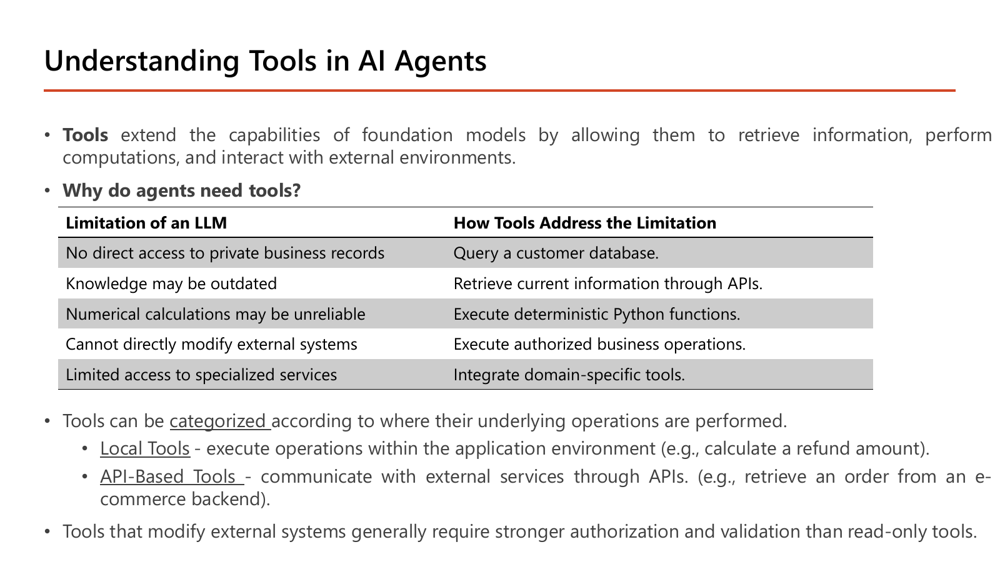
พนักงานคอลเซ็นเตอร์มีคู่มือนโยบายบนโต๊ะ มีโน้ตว่าลูกค้าคนนี้เคยโทรมาเรื่องอะไร และมีใบงานของสายที่กำลังคุยอยู่ สามอย่างนี้คือ knowledge base, memory และ state
| memory | คืออะไร | ตัวอย่าง |
|---|---|---|
| short-term | ข้อมูลของบทสนทนาหรืองานปัจจุบัน | order ID ปัจจุบัน ผลของ tool ก่อนหน้า |
| long-term | ข้อมูลข้ามหลาย session | ความชอบของลูกค้า ประวัติการติดต่อ |
ใน LangChain ประวัติบทสนทนาคือ list ของ message: SystemMessage ให้คำสั่ง agent · HumanMessage ก่อนหน้า มี customer ID · AIMessage คำตอบก่อนหน้า · HumanMessage ปัจจุบัน คำถามใหม่
โมเดลไม่จำการเรียก API ครั้งก่อนเอง แอปต้องเก็บและส่งประวัติที่เกี่ยวข้องให้ทุกครั้ง
| ส่วน | จุดประสงค์ | ตัวอย่าง |
|---|---|---|
| Knowledge base | เก็บความรู้โดเมนและเอกสารอ้างอิง | นโยบายยกเลิกและ refund |
| Memory | เก็บข้อมูลจาก interaction ที่ผ่านมาไว้ใช้ตอนนี้หรืออนาคต | customer ID ที่เคยให้ ความชอบ ประวัติแชท |
| State | ติดตามและอัปเดตข้อมูลของ workflow ปัจจุบันระหว่างขั้น | คำขอปัจจุบัน ประเภทปัญหา สถานะ order ผล tool คำตอบที่สร้าง |
memory กับ state ซ้อนกันได้ เช่น customer ID จาก memory กลายเป็นส่วนของ state แยกกันที่จุดประสงค์ ไม่ใช่ระยะเวลาที่เก็บ
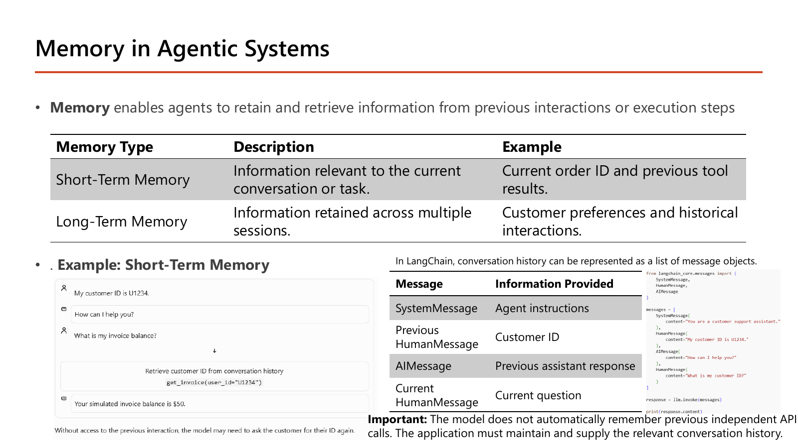
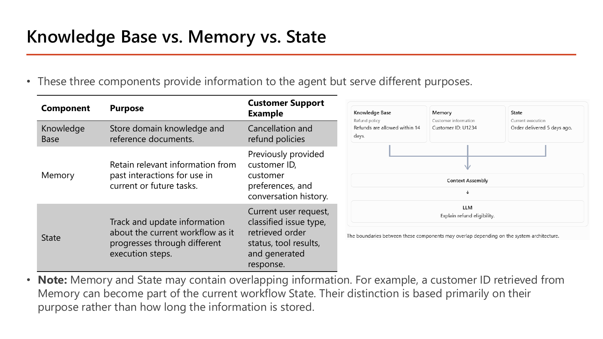
orchestration คือกลไกที่ประสาน model, tool, memory เพื่อเป้าหมาย หน้าที่: planning · tool selection · execution and coordination คือรันตามลำดับที่เหมาะ · state management · monitoring ตรวจความคืบหน้าและความล้มเหลว · dynamic replanning ปรับ action เมื่อมีข้อมูลใหม่ Key Takeaway: tool กำหนดว่า agent ทำอะไรได้ orchestration กำหนดว่าใช้เมื่อไรและอย่างไร
| Single-agent | Multi-agent | |
|---|---|---|
| specialization | agent เดียวทำหลายงาน | แต่ละ agent ถนัดคนละงาน |
| coordination | ค่อนข้างง่าย | ต้องประสานระหว่าง agent |
| cost | overhead การประสานต่ำ | อาจเรียกโมเดลมากขึ้น |
| งานที่เหมาะ | งานที่นิยามชัด | งานซับซ้อนที่แยกย่อยได้ |
ตัวอย่าง customer support ในรูปขวาของสไลด์หน้า 18: single-agent มี Customer Support Agent ตัวเดียวถือ invoice, refund, order, technical tool · multi-agent มี coordinator agent กระจายงานให้ billing, refund, order, technical agent
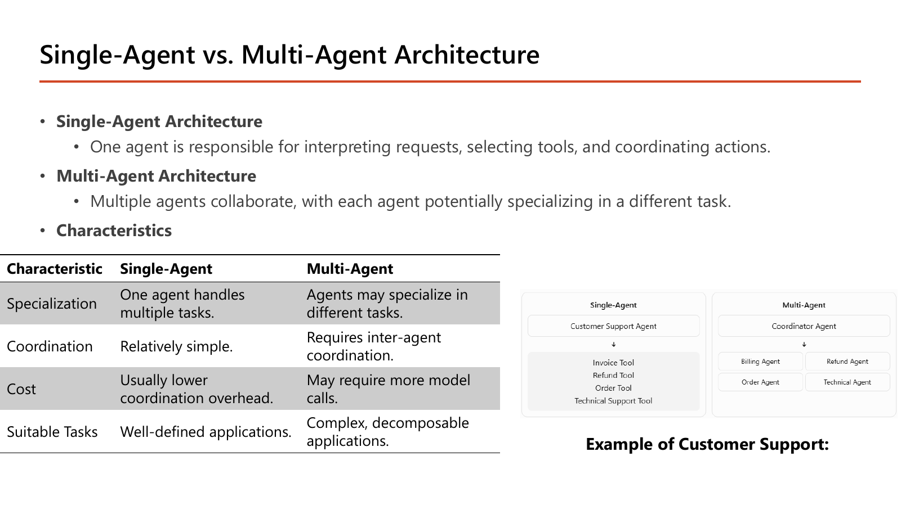
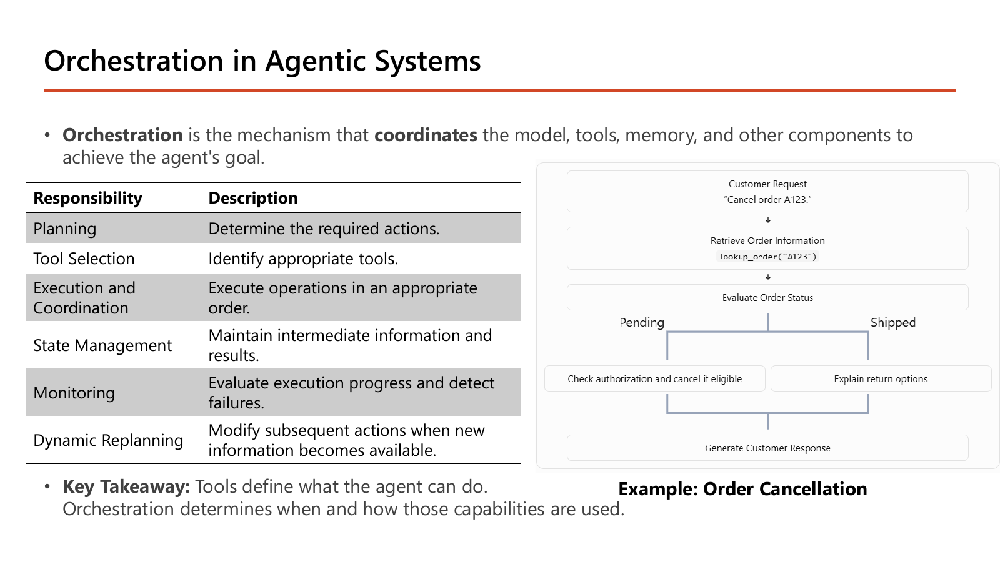
| Framework | จุดแข็ง | เหมาะกับ |
|---|---|---|
| LangChain | ต่อ model, tool, message, operation ประกอบกันได้ | แอป LLM และการต่อ tool |
| LangGraph | workflow มี state, routing ตามเงื่อนไข, วนซ้ำ | agentic workflow ซับซ้อน |
| AutoGen | สื่อสารและร่วมงานระหว่าง agent | multi-agent |
| CrewAI | agent ตามบทบาท ประสานงาน | prototype multi-agent เร็ว |
| OpenAI Agents SDK | สร้าง agent และต่อ tool | agent ที่ใช้ tool |
จำเป็นต้องใช้ framework ไหม: ไม่ agent ง่ายๆ เขียนด้วย model API กับ Python ธรรมดาได้ บทนี้ใช้ LangChain ต่อ model กับ tool และ LangGraph สำหรับ orchestration แบบกราฟ
| ส่วนของ LangChain | หน้าที่ | method | หน้าที่ |
|---|---|---|---|
| Chat Models | interface กลางเรียก LLM | llm.invoke() | เรียก LLM |
| Messages | คำสั่ง ประวัติ ผล tool | llm.bind_tools() | ให้ tool definition กับโมเดล |
| Tools | ความสามารถที่เรียกได้ | tool.invoke() | รัน tool |
| Runnables | interface ประกอบต่อกันได้ | chain.invoke() | รันลำดับที่ประกอบไว้ |
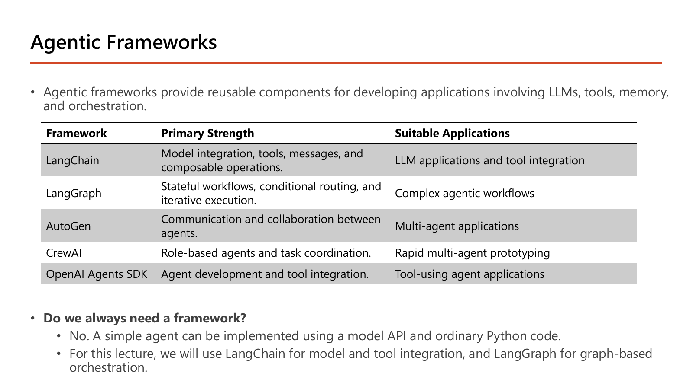
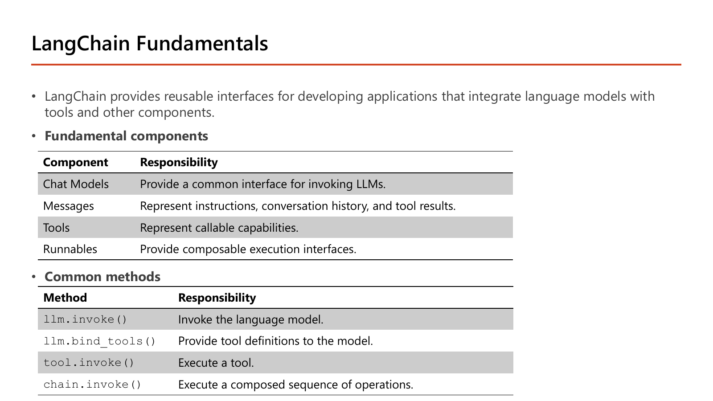
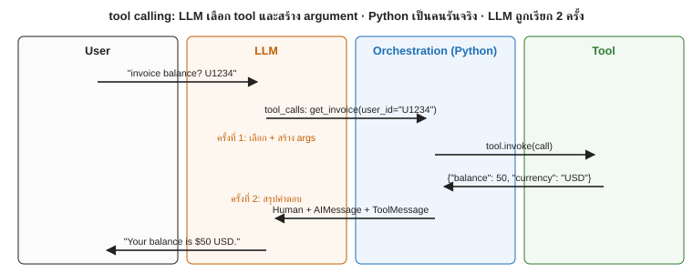
LLM เหมือนหัวหน้าที่เขียนใบสั่งงานว่า "ไปดึง invoice ของลูกค้า U1234" แต่ไม่ได้ลงมือเอง Python คือลูกน้องที่รับใบสั่งไปทำ แล้วเอาผลกลับมาให้หัวหน้าสรุปเป็นคำตอบ
ไล่ลูกศรจากบนลงล่าง: คำถามไปถึง LLM ครั้งแรก LLM คืน tool call ไม่ใช่คำตอบ Python รัน tool ได้ผล แล้วส่งคำถามเดิม tool call และผลกลับให้ LLM ครั้งที่สองเพื่อสรุปคำตอบ
| ขั้น | ใครทำ |
|---|---|
| เข้าใจคำขอ · เลือก tool · สร้าง argument | LLM |
| รันฟังก์ชัน Python | orchestration layer |
| สร้างคำตอบสุดท้าย | LLM |
bind_tools รับประกันว่าจะเรียก tool ไหม: ไม่ ถ้าไม่ bind llm.invoke("What is my invoice balance?") โมเดลอาจถามข้อมูลเพิ่มหรืออธิบายวิธีเช็ค แต่ขอใช้ tool ผ่าน interface ไม่ได้เพราะไม่รู้จัก tool ถ้า bind แล้ว llm_with_tools.invoke("What is my invoice balance? My customer ID is U1234.") โมเดลเลือก tool และสร้าง argument ได้ แต่การเรียกจริงขึ้นกับความสามารถโมเดล นิยาม tool คำสั่ง และบริบท
bind_tools ไม่ได้รัน tool และไม่รับประกันว่าจะเรียก · ใน lab ใช้ tool_choice="required" บังคับให้เรียกอย่างน้อยหนึ่ง tool
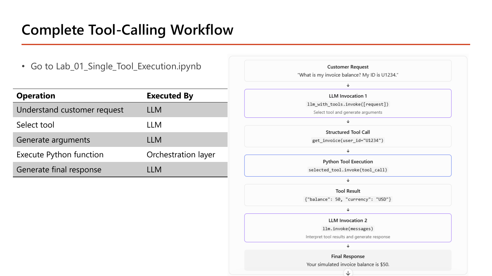
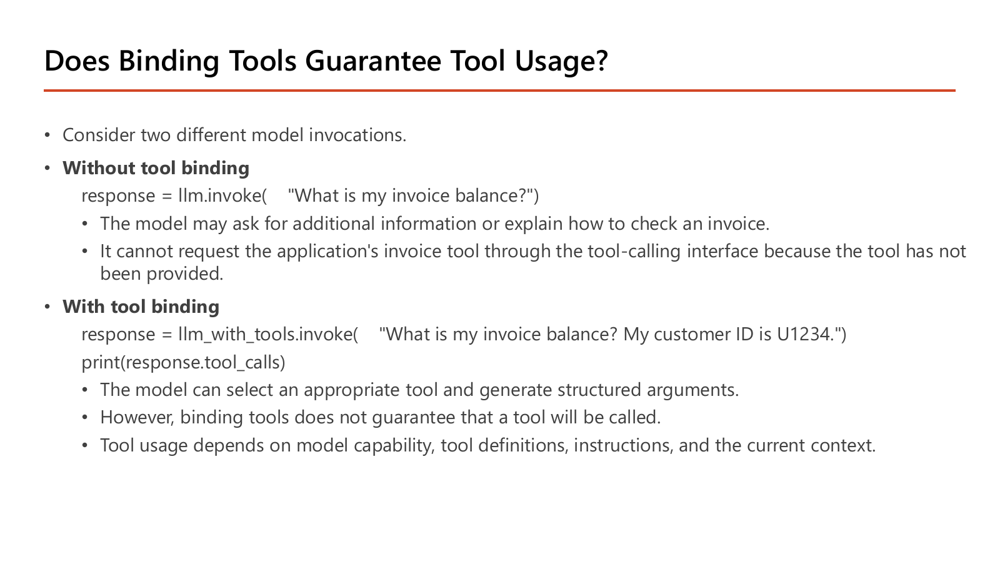
สไลด์หน้า 23 ข้างล่างแสดงตัวอย่างนี้เป็นตาราง tool ยิ่งมาก ยิ่งเลือกยาก โดยเฉพาะ tool ที่คำอธิบายคล้ายกัน ตัวอย่าง 8 tool: get_invoice, get_refund_status, get_order_status, calculate_refund, cancel_order, reset_password, get_service_logs, create_ticket ลูกค้าถาม "I returned my product last week. Has my money been sent back?" agent ต้องตัดสินว่า ต้องใช้ tool ไหม: ใช่ · tool ไหน: get_refund_status · argument อะไร: customer ID · ต้องถามเพิ่มไหม: ถามหา customer ID ถ้ายังไม่มี
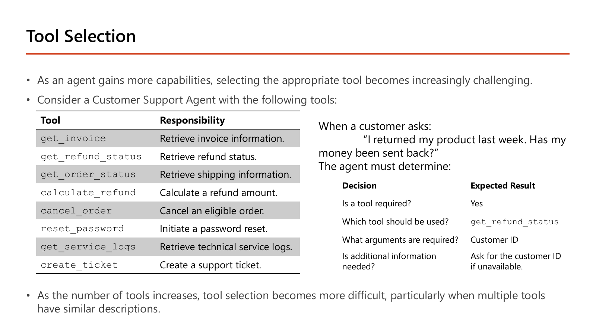
| Standard | Semantic | Hierarchical | |
|---|---|---|---|
| วิธี | ส่งนิยามทุก tool ให้ LLM | ใช้ embedding ของชื่อและคำอธิบาย tool ค้น tool ที่เกี่ยวก่อน | เลือกกลุ่ม tool ก่อน แล้วเลือก tool ในกลุ่ม |
| ตัดตัวเลือกด้วย | ไม่ตัด | embedding similarity | จัดกลุ่ม |
| LLM call ตอนเลือก | ปกติ 1 | ปกติ 1 + query embedding | ปกติ 2 |
| โครงสร้างเพิ่ม | น้อยที่สุด | embedding model และ retrieval index | นิยามกลุ่มและ routing |
| input token | เพิ่มตามจำนวน tool | คุมด้วย top-k | คุมด้วยกลุ่มที่เลือก |
| พังแบบไหน | เลือก tool ผิด | ค้นไม่เจอ tool ที่ถูก | เลือกกลุ่มผิด |
| เหมาะกับ | tool น้อยหรือแยกกันชัด | tool เยอะ ค้นได้ | tool เยอะ แบ่งกลุ่มตามธรรมชาติ |
ทั้งสามวิธี LLM เป็นคนเลือก tool สุดท้ายเหมือนกัน ต่างแค่การตัดตัวเลือกก่อนส่ง · hierarchical ใช้ LLM สองครั้ง
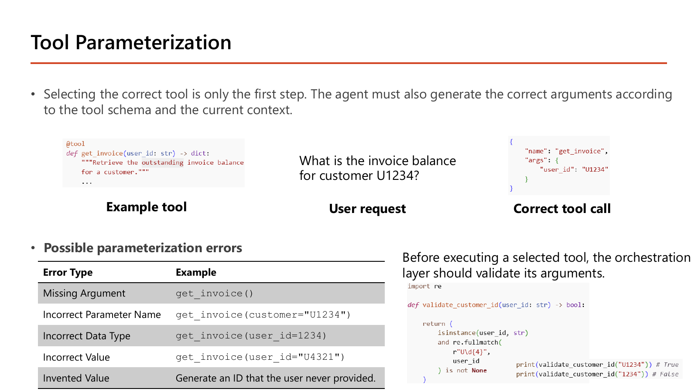
tool get_invoice(user_id: str) คำขอ "What is the invoice balance for customer U1234?" tool call ที่ถูกคือ name get_invoice args {"user_id": "U1234"} ข้อผิดพลาดห้าแบบ:
| ข้อผิดพลาด | ตัวอย่าง |
|---|---|
| ขาด argument | get_invoice() |
| ชื่อ parameter ผิด | get_invoice(customer="U1234") |
| ชนิดข้อมูลผิด | get_invoice(user_id=1234) |
| ค่าผิด | get_invoice(user_id="U4321") |
| แต่งค่าขึ้นเอง | สร้าง ID ที่ผู้ใช้ไม่เคยให้ |
import re
def validate_customer_id(user_id: str) -> bool:
return (
isinstance(user_id, str)
and re.fullmatch(
r"U\d{4}",
user_id
) is not None
)
print(validate_customer_id("U1234")) # True
print(validate_customer_id("1234")) # Falseก่อนรัน tool orchestration ควรตรวจ argument ฟังก์ชันนี้รับเฉพาะ string ที่ขึ้นต้นด้วย U ตามด้วยตัวเลข 4 หลักพอดี
"U12345" มีเลข 5 หลัก fullmatch ไม่ตรง ได้ False · 1234 ไม่ใช่ str ได้ False ตั้งแต่ isinstance
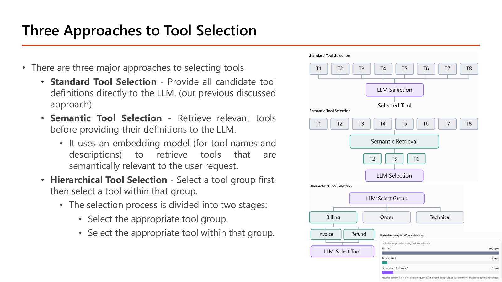
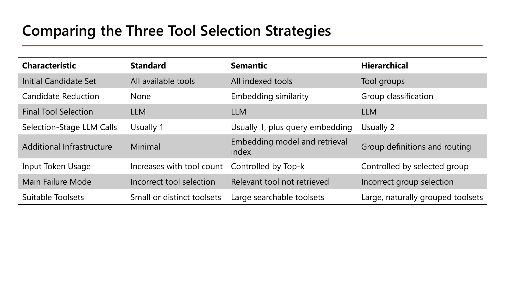
tool topology คือวิธีจัด เชื่อม และรัน tool ใน agent software เดิมนักพัฒนากำหนด control flow เองทั้งหมด agentic AI ให้บางการตัดสินใจเกิดแบบ dynamic ตามคำขอและบริบท เลือก topology จากความซับซ้อน dependency ระหว่าง tool และข้อกำหนดการรัน
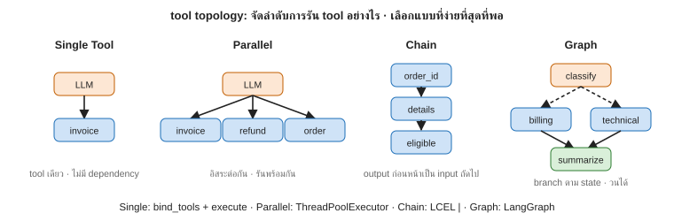
อ่านซ้ายไปขวา ความซับซ้อนเพิ่มขึ้น: tool เดียว · หลาย tool ที่ไม่พึ่งกันรันพร้อมกัน · tool ที่ต้องรอผลกันเรียงเป็นแถว · กราฟที่แยกทางตาม state และวนได้ แถวล่างบอกเครื่องมือที่ใช้เขียนแต่ละแบบในบทนี้
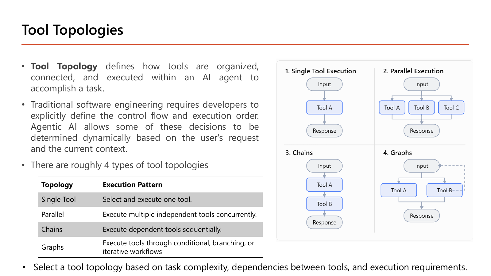
agent เลือกและรัน tool เดียวพอดี ขั้นตอน: รับคำขอ → เลือก tool → สร้าง argument → รัน → สร้างคำตอบจากผล ลักษณะ: tool เดียวต่อคำขอ · LLM เลือก tool และ argument · ไม่มี dependency · ซับซ้อนน้อย latency ต่ำ tool ตัวอย่าง get_invoice, get_refund, get_order ทุกตัวรับ customer ID
ขั้นที่ 1 นิยาม tool: @tool แปลงฟังก์ชัน Python เป็น LangChain tool · ชื่อฟังก์ชันคือชื่อ tool · docstring บอกจุดประสงค์ · type hint บอก input · return คือผล ในงานจริงฟังก์ชันจะดึงจากฐานข้อมูลหรือ API ตัวอย่างนี้คืนข้อมูลจำลอง
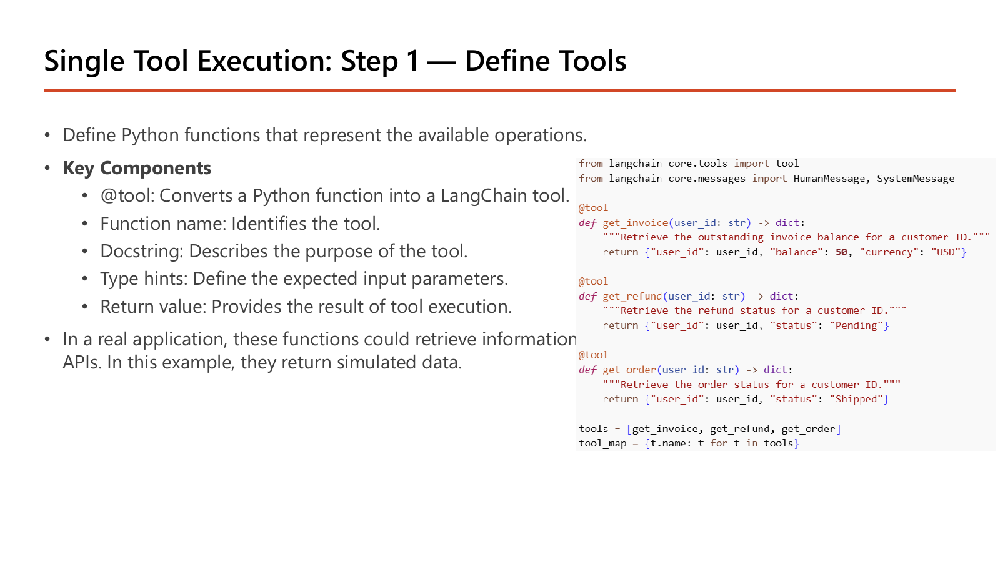
สาม tool คืนข้อมูลจำลองที่ใช้ต่อทั้งบท: invoice balance 50 USD · refund Pending · order Shipped tool_map จับคู่ชื่อกับ tool ไว้ใช้ตอนรัน
from langchain_core.tools import tool
from langchain_core.messages import HumanMessage, SystemMessage
@tool
def get_invoice(user_id: str) -> dict:
"""Retrieve the outstanding invoice balance for a customer ID."""
return {"user_id": user_id, "balance": 50, "currency": "USD"}
@tool
def get_refund(user_id: str) -> dict:
"""Retrieve the refund status for a customer ID."""
return {"user_id": user_id, "status": "Pending"}
@tool
def get_order(user_id: str) -> dict:
"""Retrieve the order status for a customer ID."""
return {"user_id": user_id, "status": "Shipped"}
tools = [get_invoice, get_refund, get_order]
tool_map = {t.name: t for t in tools}notebook แสดง schema ที่ LangChain สร้างจาก signature และ docstring: type function · name get_invoice · description จาก docstring · parameters มี user_id ชนิด string และ required ["user_id"] นี่คือสิ่งที่โมเดลเห็น ไม่ใช่ตัวโค้ด
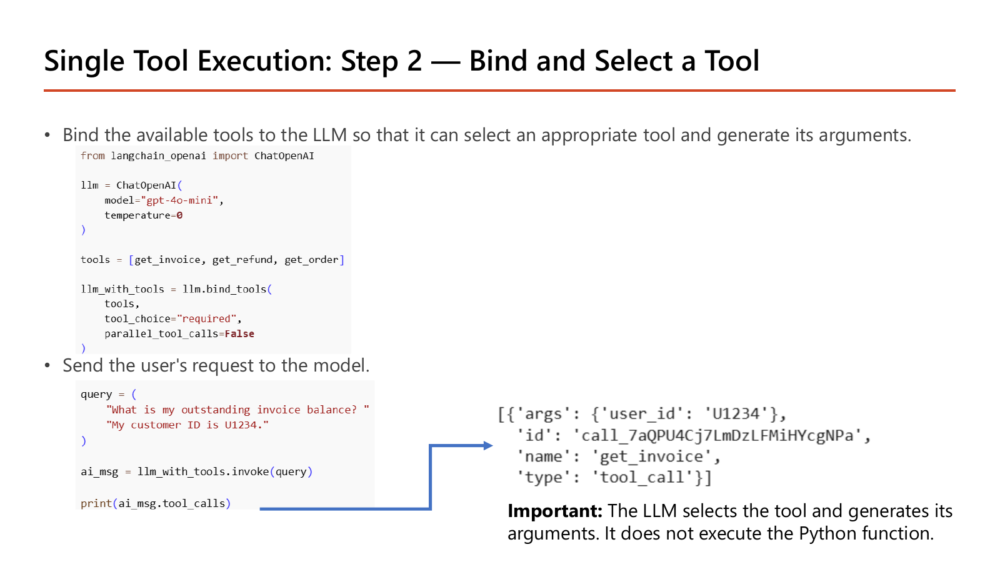
ผลที่พิมพ์คือ list ที่มี tool call เดียว: args {'user_id': 'U1234'} · id ที่สร้างตอนรัน · name 'get_invoice' · type 'tool_call' จุดสำคัญคือ LLM เลือก tool และสร้าง argument แต่ไม่ได้รันฟังก์ชันเอง
from langchain_openai import ChatOpenAI
llm = ChatOpenAI(
model="gpt-4o-mini",
temperature=0
)
tools = [get_invoice, get_refund, get_order]
llm_with_tools = llm.bind_tools(
tools,
tool_choice="required",
parallel_tool_calls=False
)
query = (
"What is my outstanding invoice balance? "
"My customer ID is U1234."
)
ai_msg = llm_with_tools.invoke(query)
print(ai_msg.tool_calls)temperature=0 | ให้ผลคงที่ที่สุด |
tool_choice="required" | บังคับให้เรียก tool อย่างน้อยหนึ่งตัว ไม่ตอบเป็นข้อความเปล่า |
parallel_tool_calls=False | จำกัดให้เรียกได้ทีละ tool |
ai_msg.tool_calls | AIMessage มี tool call ฟังก์ชันยังไม่ถูกรัน |
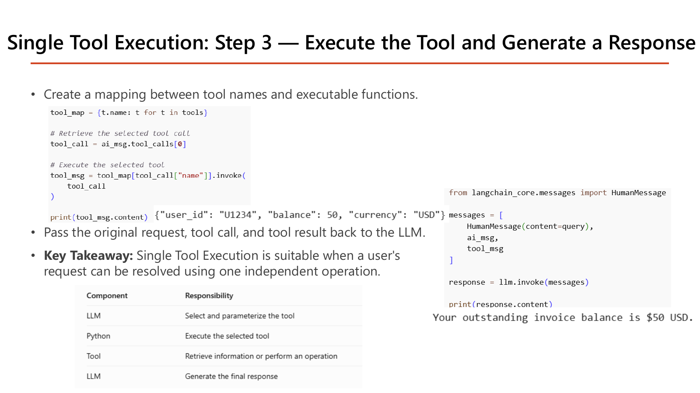
Python หยิบ tool จาก tool_map ตามชื่อแล้ว invoke ด้วย tool call ทั้งก้อน ได้ ToolMessage ที่มี content {"user_id": "U1234", "balance": 50, "currency": "USD"} จากนั้นส่งคำถาม AIMessage และ ToolMessage ให้ llm ตัวที่ไม่ bind tool ได้ "Your outstanding invoice balance is $50 USD."
tool_map = {t.name: t for t in tools}
# Retrieve the selected tool call
tool_call = ai_msg.tool_calls[0]
# Execute the selected tool
tool_msg = tool_map[tool_call["name"]].invoke(
tool_call
)
print(tool_msg.content)
from langchain_core.messages import HumanMessage
messages = [
HumanMessage(content=query),
ai_msg,
tool_msg
]
response = llm.invoke(messages)
print(response.content)tool_map[tool_call["name"]] | แปลงชื่อที่ LLM เลือกเป็น tool จริง |
.invoke(tool_call) | ส่ง tool call ทั้งก้อนจึงได้ ToolMessage ที่มี tool_call_id ตรงกัน |
messages = [HumanMessage, ai_msg, tool_msg] | LLM ครั้งที่สองไม่จำครั้งแรก ต้องส่งประวัติเอง |
llm.invoke(messages) | ใช้ llm ปกติที่ไม่ bind tool สรุปคำตอบ |
สรุปว่าใครทำอะไร: LLM เลือกและสร้าง parameter · Python รัน tool · tool ดึงข้อมูล · LLM สร้างคำตอบสุดท้าย · ทั้ง workflow เรียก LLM 2 ครั้ง
notebook เพิ่ม SystemMessage และตรวจ tool call ก่อนรัน: ไม่มีหรือ invalid ให้ error · ต้องมี tool call เดียว · ชื่อต้องอยู่ใน tool_map · ถ้าใส่ SystemMessage ให้บอกว่าข้อมูลจำลอง คำตอบจะต่อท้าย "Please note that these records are simulated."
name get_refund args {"user_id": "U1234"} · ToolMessage status Pending · คำตอบบอกว่า refund ยัง Pending
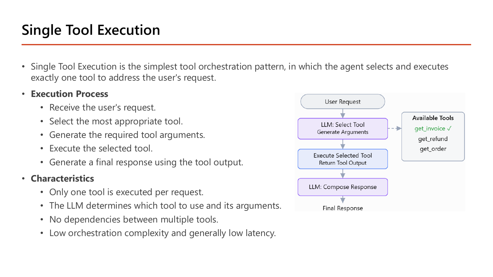
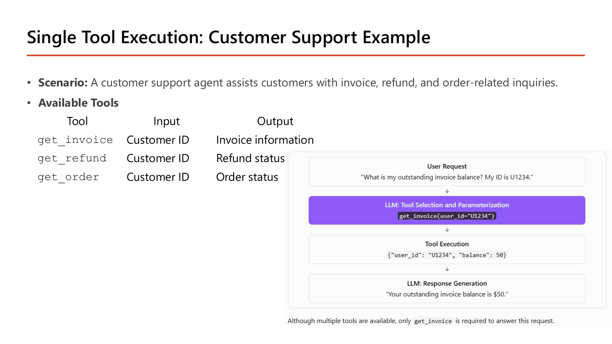
รันหลาย tool อิสระพร้อมกัน agent ต้องตัดสินทั้งว่าใช้ tool ไหนและกี่ตัว ขั้นตอน: วิเคราะห์คำขอ → เลือกทุก tool ที่เกี่ยว → สร้าง argument ของแต่ละตัว → รันพร้อมกัน → รวมผล → สร้างคำตอบ ลักษณะ: แต่ละ tool มี argument ของตัวเอง ไม่พึ่ง output ของกัน เก็บผลครบก่อนสร้างคำตอบ
ตัวอย่างคำขอ: "Please check my outstanding invoice, refund status, and order status. My customer ID is U1234."
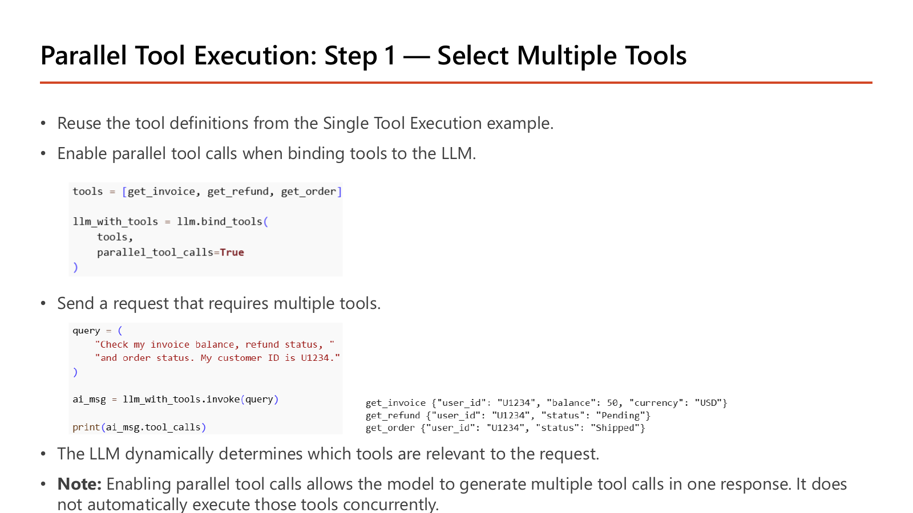
เปลี่ยนแค่ parallel_tool_calls=True โมเดลคืน tool call สามตัวใน response เดียว: get_invoice, get_refund, get_order ทุกตัว args {"user_id": "U1234"}
tools = [get_invoice, get_refund, get_order]
llm_with_tools = llm.bind_tools(
tools,
parallel_tool_calls=True
)
query = (
"Check my invoice balance, refund status, "
"and order status. My customer ID is U1234."
)
ai_msg = llm_with_tools.invoke(query)
print(ai_msg.tool_calls)parallel_tool_calls=True ให้โมเดลสร้างหลาย tool call ในคำตอบเดียว แต่ไม่ได้รัน tool พร้อมกันเอง การรันพร้อมกันต้องเขียนเอง
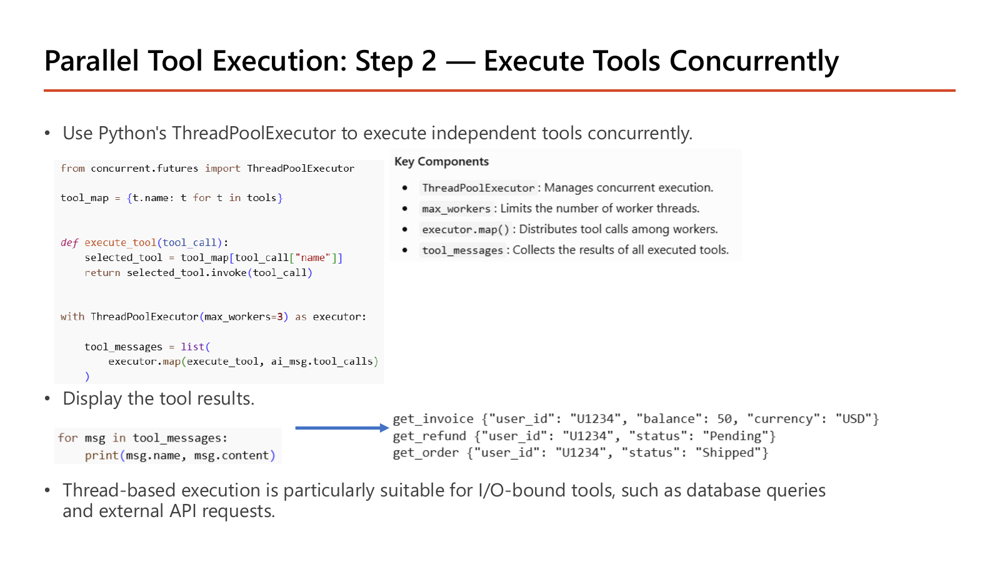
ThreadPoolExecutor กระจาย tool call ให้ thread รันพร้อมกัน ผลที่พิมพ์: get_invoice balance 50 USD · get_refund Pending · get_order Shipped การใช้ thread เหมาะกับ tool ที่รอ I/O เช่น query ฐานข้อมูลหรือเรียก API
from concurrent.futures import ThreadPoolExecutor
tool_map = {t.name: t for t in tools}
def execute_tool(tool_call):
selected_tool = tool_map[tool_call["name"]]
return selected_tool.invoke(tool_call)
with ThreadPoolExecutor(max_workers=3) as executor:
tool_messages = list(
executor.map(execute_tool, ai_msg.tool_calls)
)
for msg in tool_messages:
print(msg.name, msg.content)
messages = [
HumanMessage(content=query),
ai_msg,
*tool_messages
]
response = llm.invoke(messages)
print(response.content)ThreadPoolExecutor | จัดการการรันพร้อมกัน |
max_workers=3 | จำนวน thread สูงสุด |
executor.map(execute_tool, ai_msg.tool_calls) | กระจาย tool call ให้ worker |
*tool_messages | แตก list ToolMessage ทั้งสามเข้าไปใน messages |
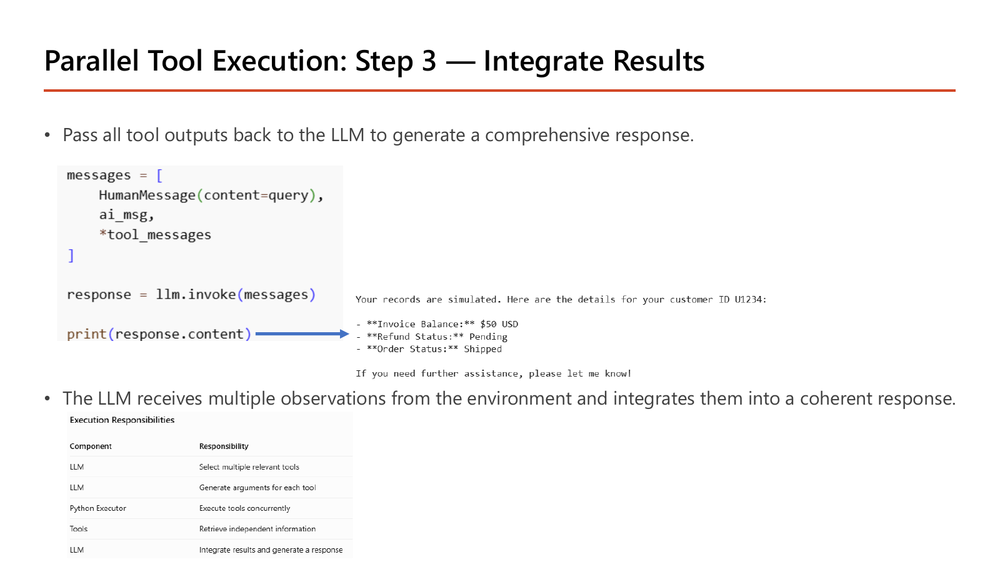
LLM รับผลสามชิ้นจากสภาพแวดล้อมแล้วรวมเป็นคำตอบเดียว: invoice $50 USD refund Pending order Shipped หน้าที่: LLM เลือกหลาย tool และสร้าง argument ให้แต่ละตัว · Python executor รันพร้อมกัน · tool ดึงข้อมูลอิสระ · LLM รวมผลและตอบ
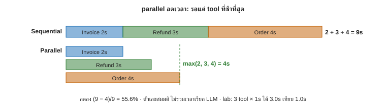
แถวบนรันทีละตัวจึงต้องรอผลรวมทุกตัว แถวล่างรันพร้อมกัน เวลาจบจึงเท่ากับตัวที่ช้าที่สุด
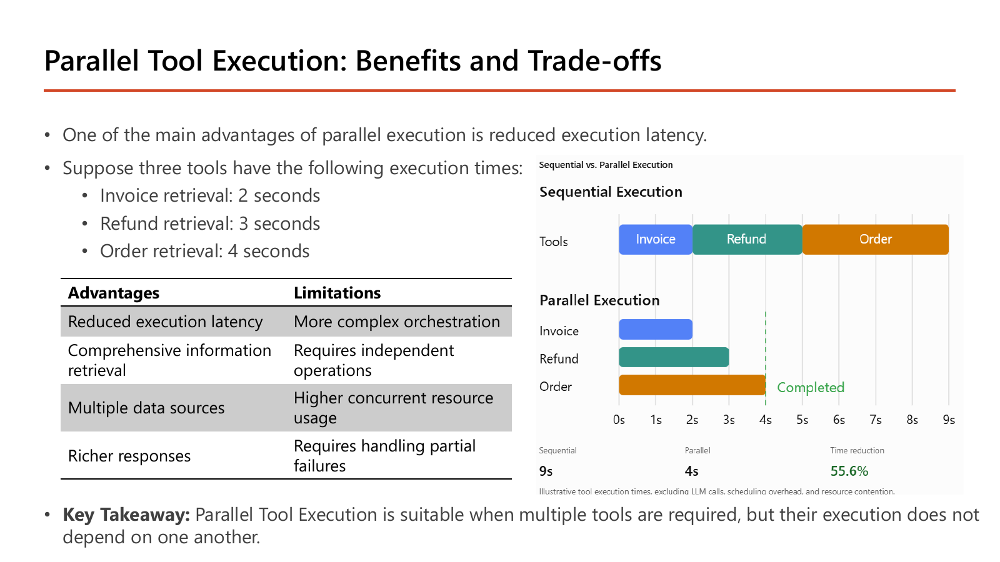
invoice 2s refund 3s order 4s: sequential 2 + 3 + 4 = 9s · parallel max(2, 3, 4) = 4s · ลดลง 5/9 = 55.6% · notebook Lab_02 ใส่ sleep 1s ให้ทั้งสาม tool ได้ sequential 3.0s concurrent 1.0s
| ข้อดี | ข้อจำกัด |
|---|---|
| latency ลดลง | orchestration ซับซ้อนขึ้น |
| ดึงข้อมูลได้ครบ | ต้องเป็น operation อิสระ |
| หลายแหล่งข้อมูล | ใช้ทรัพยากรพร้อมกันมากขึ้น |
| คำตอบสมบูรณ์ขึ้น | ต้องรับมือความล้มเหลวบางส่วน |
sequential 9s · parallel 5s · ลด 4/9 ≈ 44.4%
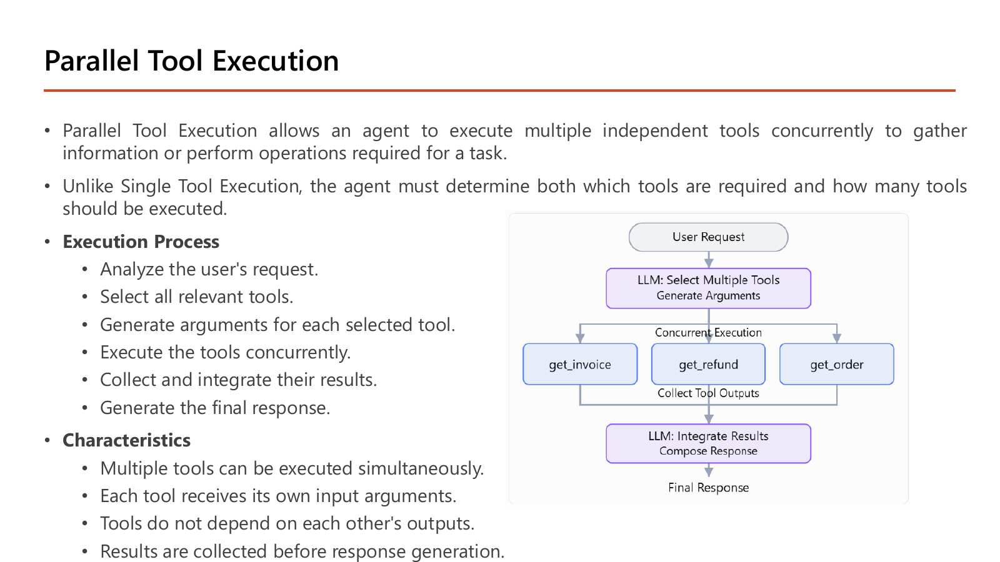
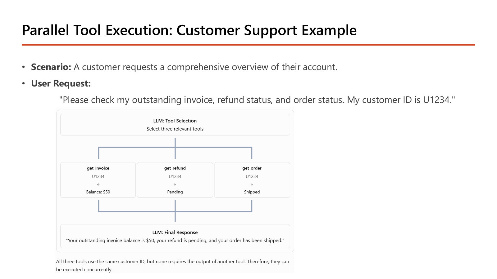
ทำอาหารตามสูตรต้องหั่นก่อนผัด ผัดก่อนจัดจาน สลับลำดับไม่ได้ ต่างจากต้มน้ำกับหุงข้าวที่ทำพร้อมกันได้ แบบแรกคือ chain แบบหลังคือ parallel
chain คือลำดับ operation ที่ output ของขั้นหนึ่งเป็น input ของขั้นถัดไป ต่างจาก parallel ตรงที่มี dependency ลักษณะ: รันเรียงลำดับ · ขั้นหลังพึ่งผลขั้นก่อน · ลำดับสำคัญ · ส่งผลระหว่างกลางต่อกัน · error ลามต่อได้
ตัวอย่างในสไลด์หน้า 40: "Can I get a refund for my latest order? My customer ID is U1234." ต้องหา order ID ล่าสุดก่อน แล้วดึงรายละเอียด order แล้วจึงตัดสินสิทธิ์ refund รันพร้อมกันไม่ได้เพราะขั้นหลังต้องใช้ผลขั้นก่อน
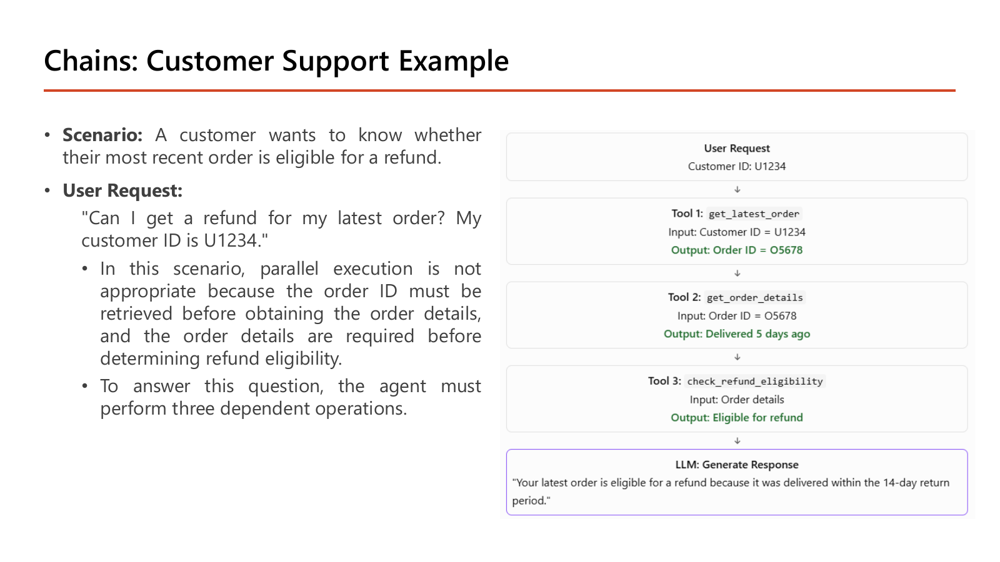
LangChain Expression Language หรือ LCEL ประกอบ operation เป็น chain ด้วย pipe chain = component_a | component_b | component_c ทุก component เป็น Runnable จึงประกอบและรันแบบเดียวกันได้
| method | ทำอะไร | component | ทำอะไร |
|---|---|---|---|
invoke() | รัน 1 input | RunnableLambda | ห่อฟังก์ชัน Python เป็น Runnable |
batch() | รันหลาย input | PromptTemplate | สร้าง prompt |
stream() | ส่ง output ทีละส่วน | ChatOpenAI | เรียก LLM |
ainvoke() | รันแบบ asynchronous | StrOutputParser | แปลง output เป็น string |
| RunnableSequence | รันหลาย Runnable ตามลำดับ |
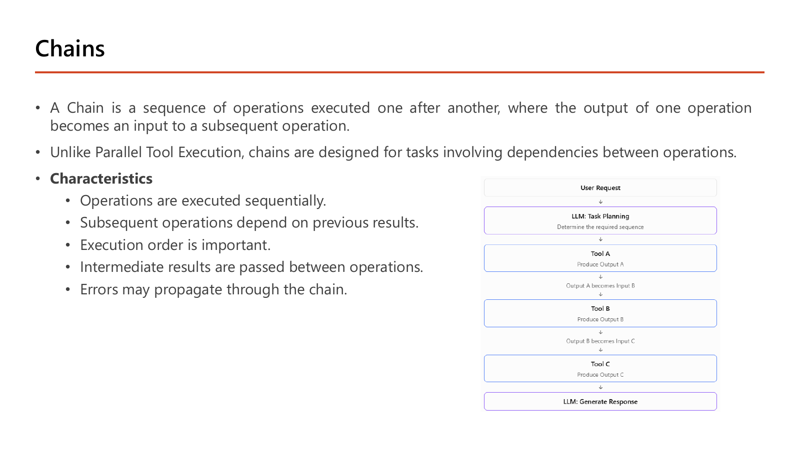
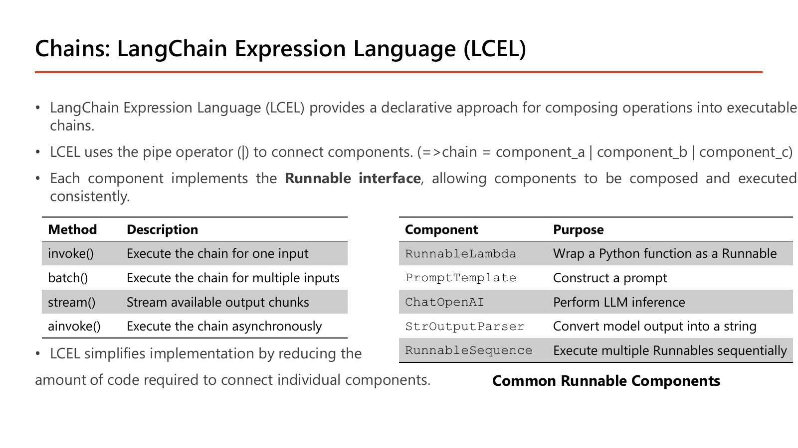
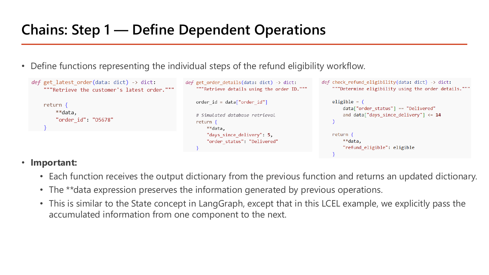
ทุกฟังก์ชันรับ dict จากขั้นก่อนแล้วคืน dict ที่เพิ่ม field ใหม่ **data คัดลอกข้อมูลเดิมไปด้วย แนวคิดเหมือน state ของ LangGraph ต่างตรงที่ LCEL ต้องส่งข้อมูลสะสมต่อเอง
def get_latest_order(data: dict) -> dict:
"""Retrieve the customer's latest order."""
return {
**data,
"order_id": "O5678"
}
def get_order_details(data: dict) -> dict:
"""Retrieve details using the order ID."""
order_id = data["order_id"]
# Simulated database retrieval
return {
**data,
"days_since_delivery": 5,
"order_status": "Delivered"
}
def check_refund_eligibility(data: dict) -> dict:
"""Determine eligibility using the order details."""
eligible = (
data["order_status"] == "Delivered"
and data["days_since_delivery"] <= 14
)
return {
**data,
"refund_eligible": eligible
}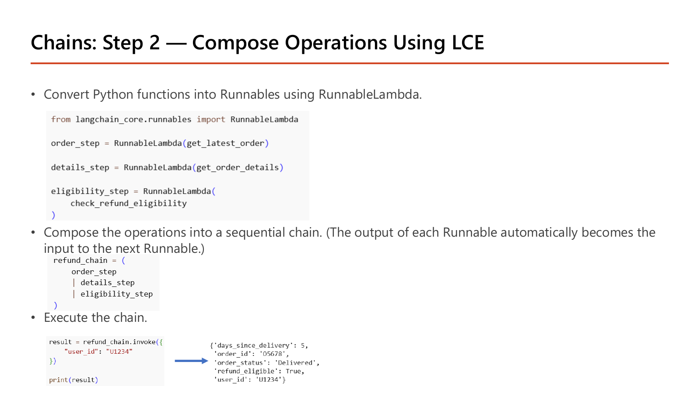
ห่อสามฟังก์ชันด้วย RunnableLambda แล้วต่อด้วย pipe ผลของ invoke({"user_id": "U1234"}) คือ dict ที่มี days_since_delivery 5 · order_id O5678 · order_status Delivered · refund_eligible True · user_id U1234 สไลด์พิมพ์หัวข้อว่า "Using LCE" ขาดตัว L
from langchain_core.runnables import RunnableLambda
order_step = RunnableLambda(get_latest_order)
details_step = RunnableLambda(get_order_details)
eligibility_step = RunnableLambda(
check_refund_eligibility
)
refund_chain = (
order_step
| details_step
| eligibility_step
)
result = refund_chain.invoke({
"user_id": "U1234"
})
print(result)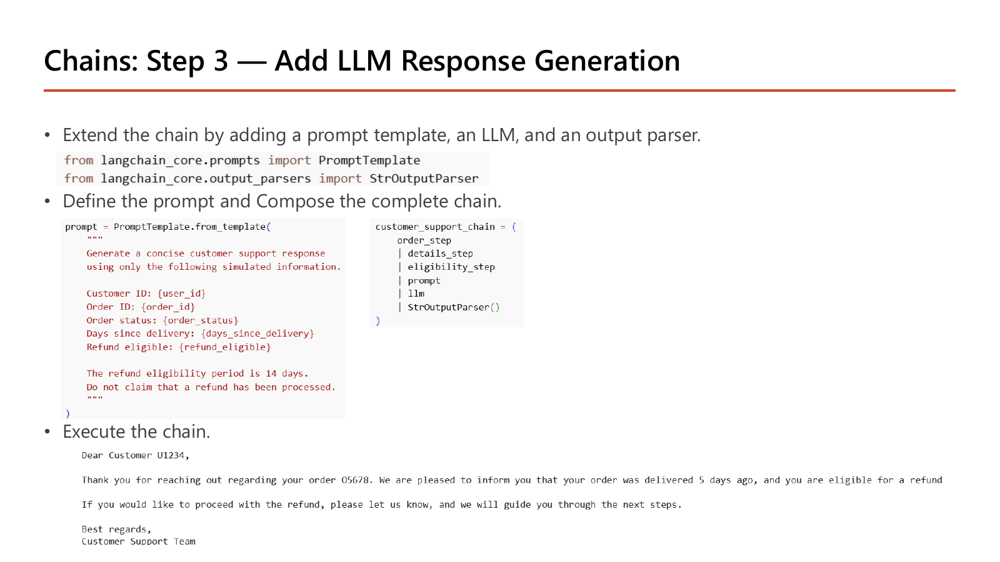
ต่อ prompt, llm และ StrOutputParser ท้าย chain เดิม prompt เติมค่าจาก dict ลงใน {user_id}, {order_id} ฯลฯ LLM แค่อธิบายผล ไม่ได้ตัดสินสิทธิ์ เพราะสิทธิ์ถูกคำนวณแล้วด้วยกฎ 14 วัน ทั้ง chain เรียก LLM ครั้งเดียว
from langchain_core.prompts import PromptTemplate
from langchain_core.output_parsers import StrOutputParser
prompt = PromptTemplate.from_template(
"""
Generate a concise customer support response
using only the following simulated information.
Customer ID: {user_id}
Order ID: {order_id}
Order status: {order_status}
Days since delivery: {days_since_delivery}
Refund eligible: {refund_eligible}
The refund eligibility period is 14 days.
Do not claim that a refund has been processed.
"""
)
customer_support_chain = (
order_step
| details_step
| eligibility_step
| prompt
| llm
| StrOutputParser()
)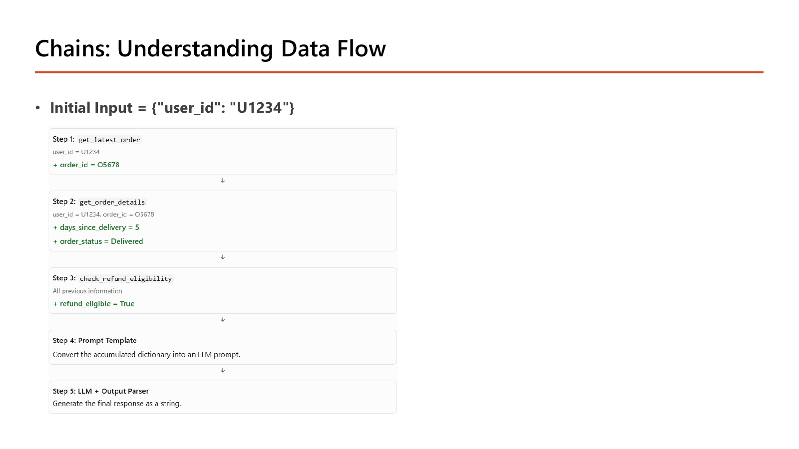
input {"user_id": "U1234"} · ขั้น 1 เพิ่ม order_id O5678 · ขั้น 2 เพิ่ม days_since_delivery 5 และ order_status Delivered · ขั้น 3 เพิ่ม refund_eligible True เพราะ 5 ≤ 14 · ขั้น 4 prompt แปลง dict เป็นข้อความ · ขั้น 5 LLM + parser ได้ string · notebook ทดสอบลูกค้า U5678 order O9999 ส่งมา 20 วัน ได้ False
| ข้อดี | ข้อจำกัด |
|---|---|
| รองรับ operation ที่พึ่งกัน | รันเรียงจึง latency สูงขึ้น |
| workflow ชัดเข้าใจง่าย | error ลามระหว่างขั้น |
| ประกอบง่ายด้วย LCEL | chain ตายตัวยืดหยุ่นน้อย |
| เหมาะกับกระบวนการเส้นตรง | ไม่เหมาะกับการแตกกิ่งซับซ้อน |
best practice: กำหนด input/output ระหว่าง component ให้ชัด · ตรวจผลกลางทางก่อนไปต่อ · จัดการ error · จำกัดจำนวนขั้นของ chain ที่สร้างแบบ dynamic · อย่าทำ chain ยาวเกินจำเป็น ถ้าต้องแตกกิ่ง หลายเส้นทาง หรือวนแก้ ให้ใช้ graph
ถ้าไม่ใส่ **data ขั้นถัดไปจะหา field เดิมไม่เจอ เช่น check_refund_eligibility ไม่มี order_status · LCEL ไม่มี state กลางให้อัตโนมัติ
14 ≤ 14 เป็นจริง ได้ True · Shipped ไม่ใช่ Delivered ได้ False ไม่ว่ากี่วัน
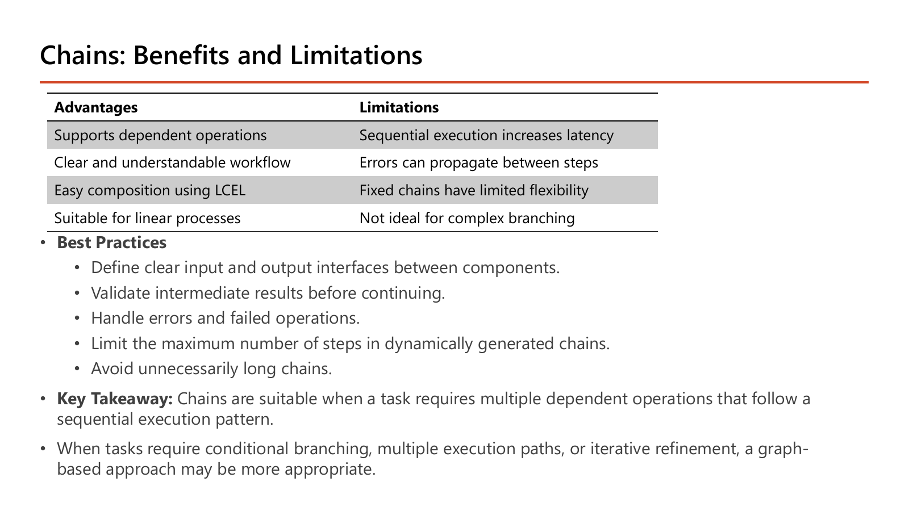
แผนผังสายด่วนของบริษัท: กด 1 เรื่องบิล กด 2 เรื่องเทคนิค แต่ละทางมีเจ้าหน้าที่ต่างกัน สุดท้ายทุกสายมาจบที่การสรุปเรื่องให้ลูกค้า ใบงานเดียวกันถูกส่งต่อและเติมข้อมูลตลอดทาง
ทำไมต้องมี graph: billing ต้องใช้ invoice หรือ refund · technical ต้องแก้ login หรือ performance · คำขอไม่ชัดต้องถามกลับ · บางงานต้องวนหรือตัดสินตามเงื่อนไข ลำดับตายตัวเส้นเดียวไม่พอ graph รองรับหลายเส้นทาง routing ตามเงื่อนไข state ร่วม และการวน
| topology | ตัวอย่าง customer support |
|---|---|
| Single tool | เช็คยอด invoice |
| Parallel | เช็ค invoice, refund, order พร้อมกัน |
| Chain | หา order ดูรายละเอียด แล้วตัดสินสิทธิ์ refund |
| Graph | จัดหมวดคำขอแล้วส่งไปคนละ workflow |
graph-based agent ประกอบด้วย node คือ tool หรือ operation · edge คือการเปลี่ยนจาก node หนึ่งไปอีก node · conditional edge เลือก node ถัดไปจาก state · state เก็บและส่งข้อมูลตลอด workflow ตัวอย่าง: จัดคำขอเป็น billing ได้แก่ invoice, refund หรือ technical ได้แก่ login, performance ส่งไป handler ที่ตรง แล้วสร้างคำตอบสุดท้าย
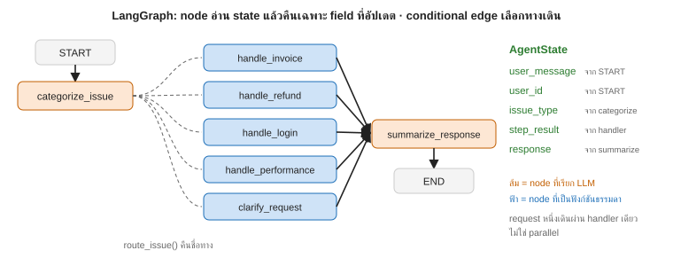
categorize_issue เป็น node ที่เรียก LLM จัดหมวด เส้นประคือ conditional edge ที่ route_issue เลือก handler หนึ่งตัว ทุก handler มารวมที่ summarize_response ซึ่งเรียก LLM อีกครั้ง คอลัมน์ขวาบอกว่าแต่ละ field ของ state ถูกเติมโดย node ไหน
| state field | คืออะไร |
|---|---|
| user_message | คำขอเดิมของลูกค้า |
| user_id | รหัสลูกค้า |
| issue_type | ผลการจัดหมวด |
| step_result | ผลจาก handler ที่ถูกเลือก |
| response | คำตอบสุดท้าย |
state คือโครงสร้างข้อมูลร่วม ทุก node อ่าน state ปัจจุบันแล้วคืนการอัปเดตให้ node ถัดไปใช้ node จึงไม่ต้องเรียก node ถัดไปเอง
from typing import TypedDict
class AgentState(TypedDict, total=False):
user_message: str
user_id: str
issue_type: str
step_result: str
response: strnode มีสองแบบ: LLM-based node เช่น categorize_issue ส่ง prompt ให้ LLM ตอบ billing หรือ technical แล้วคืน {"issue_type": ...} · function-based node เช่น handle_invoice ทำ operation แล้วคืน {"step_result": ...} node คืนเฉพาะ field ที่อัปเดต LangGraph รวมเข้า state เอง
def categorize_issue(state: AgentState) -> dict:
prompt = (
"Classify this request as 'billing' or 'technical'. "
"Return only the category name.\n"
f"Message: {state['user_message']}"
)
result = llm.invoke(prompt)
return {
"issue_type": result.content.strip().lower()
}
def handle_invoice(state: AgentState) -> dict:
# Fetch invoice details...
return {
"step_result": f"Invoice details for {state['user_id']}"
}สร้าง StateGraph จาก AgentState ลงทะเบียนทุก node ด้วย add_node ต่อ START เข้า categorize_issue แล้วใช้ route_issue เป็น router ที่อ่าน state คืนชื่อ node ถัดไป ต่อด้วย add_conditional_edges billing ที่มีคำว่า refund ไป handle_refund นอกนั้นไป handle_invoice · technical ที่มีคำว่า login ไป handle_login นอกนั้นไป handle_performance
from langgraph.graph import StateGraph, START, END
# Initialize the graph with the state schema
graph = StateGraph(AgentState)
# Register nodes
graph.add_node("categorize_issue", categorize_issue)
graph.add_node("handle_invoice", handle_invoice)
graph.add_node("handle_refund", handle_refund)
graph.add_node("handle_login", handle_login)
graph.add_node("handle_performance", handle_performance)
graph.add_node("summarize_response", summarize_response)
# Identify the starting point
graph.add_edge(START, "categorize_issue")
def route_issue(state: AgentState) -> str:
issue_type = state["issue_type"]
message = state["user_message"].lower()
if issue_type == "billing":
if "refund" in message:
return "handle_refund"
return "handle_invoice"
elif issue_type == "technical":
if "login" in message:
return "handle_login"
return "handle_performance"
raise ValueError("Unknown issue type")
graph.add_conditional_edges(
"categorize_issue",
route_issue,
{
"handle_invoice": "handle_invoice",
"handle_refund": "handle_refund",
"handle_login": "handle_login",
"handle_performance": "handle_performance"
}
)StateGraph(AgentState) | กราฟที่ใช้ AgentState เป็น schema ของ state |
graph.add_node("categorize_issue", categorize_issue) | นิยามฟังก์ชันอย่างเดียวยังไม่เป็น node ต้องลงทะเบียนก่อน |
graph.add_edge(START, "categorize_issue") | จุดเริ่ม |
route_issue(state) -> str | router คืนชื่อเส้นทาง ไม่ได้คืน state update |
add_conditional_edges(src, router, path_map) | path map แปลงชื่อที่ router คืนเป็น node ที่ลงทะเบียน |
ทุก handler ต่อ edge ไป summarize_response แล้วต่อไป END แผนภาพจาก notebook มี clarify_request เพิ่ม notebook ให้ LLM จัดเป็น billing, technical หรือ other ด้วย structured output และส่งคำขอที่ไม่ชัดไป clarify แทน raise ValueError แบบโค้ดบนสไลด์
# Connect all handler nodes to the response generation node
graph.add_edge("handle_invoice", "summarize_response")
graph.add_edge("handle_refund", "summarize_response")
graph.add_edge("handle_login", "summarize_response")
graph.add_edge("handle_performance", "summarize_response")
# Identify the ending point
graph.add_edge("summarize_response", END)compile แล้ว invoke ด้วย state เริ่มต้น state ไหลไป categorize_issue ได้ billing → handle_invoice → summarize_response → END ผลคือ "Thank you for reaching out. Your invoice information for U1234 shows a balance of $50." Key Takeaway: นักพัฒนากำหนด operation และเส้นทางที่อนุญาต เส้นทางจริงตัดสินแบบ dynamic จาก state และ routing
initial_state = {
"user_message": "I need help with my invoice.",
"user_id": "U1234",
}
app = graph.compile()
result = app.invoke(initial_state, config={"recursion_limit": 10})
print(result["response"])
print("Final state:", result)graph.compile() | เตรียมกราฟให้รันได้ |
app.invoke(initial_state, ...) | รันแล้วคืน state สุดท้ายทั้งก้อน |
recursion_limit: 10 | จำกัดจำนวนขั้น กันวนไม่จบ |
issue_type ไม่มีตอน START มีหลัง categorize_issue · คำขอหนึ่งเดินผ่าน handler เดียว ไม่ใช่ parallel · node ที่ไม่ได้ add_node ใช้ใน edge ไม่ได้
START → categorize_issue ได้ billing → route_issue เจอคำว่า refund → handle_refund → summarize_response → END
| Single | Parallel | Chain | Graph | |
|---|---|---|---|---|
| จำนวน tool | หนึ่ง | หลาย | หลาย | แปรผัน |
| รูปแบบการรัน | ครั้งเดียว | พร้อมกัน | เรียงลำดับ | ยืดหยุ่น |
| dependency | ไม่มี | อิสระ | พึ่งกัน | ยืดหยุ่น |
| แตกกิ่งตามเงื่อนไข | No | ไม่มีในตัว | ไม่มีในตัว | Yes |
| วนซ้ำ | No | ไม่มีในตัว | ไม่มีใน chain ตายตัว | รองรับ |
| ส่งข้อมูล | output ของ tool | รวม output | output ต่อกันตามลำดับ | shared state |
| ความซับซ้อน | Low | Moderate | Moderate | Higher |
| เขียนด้วย | bind_tools() + execution | ThreadPoolExecutor | LCEL | LangGraph |
Key Takeaway: topology ที่ซับซ้อนกว่าไม่ได้ดีกว่าเสมอ เลือกแบบง่ายที่สุดที่ตอบโจทย์
context engineering คือการเลือก จัด และประกอบข้อมูลที่เกี่ยวข้องให้ LLM ในแต่ละขั้น state มีข้อมูลเยอะ แต่ไม่ต้องส่งทั้งหมดทุกครั้ง Key Takeaway: ข้อมูลที่ agent มี ไม่จำเป็นต้องเป็นข้อมูลที่ควรส่งให้ LLM
| แนวคิด | รับผิดชอบ |
|---|---|
| State management | เก็บข้อมูลตลอด workflow |
| Tool topology | จัดการรัน tool และ node |
| Prompt engineering | ออกแบบคำสั่งที่ดี |
| Context engineering | ตัดสินว่า LLM ได้รับข้อมูลอะไรในแต่ละขั้น |
shared state มี user_message, issue_type, response, conversation_history, user_id, step_result, customer_profile, support_policy node จัดหมวดได้แค่ system instruction กับ user_message ส่วน node สรุปคำตอบได้ user_message, step_result และนโยบายที่เกี่ยว ถ้าเป็น billing ส่ง billing policy ไม่ส่ง technical policy ตัวอย่าง "I need help correcting my invoice." context ที่ส่งมีแค่ user_message, step_result "invoice information for U1234; balance $50" และ policy ว่าแก้ invoice ได้ภายใน 30 วัน
best practice สี่ข้อ: relevance, structure, summarization, dynamic assembly · ส่งทุกอย่างใน state ให้ LLM ไม่ใช่วิธีที่ดี เปลือง token และอาจทำให้ตอบผิด
| pattern | วางแผน | ปรับตัว | overhead | งาน | เลือกเมื่อ |
|---|---|---|---|---|---|
| Reflex | ไม่วางแผน | Low | Low | routing ง่าย | input และ action คาดได้ |
| ReAct | วางแผนทีละขั้น | High | Variable | troubleshooting | ไม่รู้ action ถัดไป |
| Planner–Executor | วางแผนทั้งหมดก่อน | Medium–High | planning overhead | งานธุรกิจหลายขั้น | ลำดับงานย่อยชัด |
| Query Decomposition | แยกเป็นคำถามย่อย | Medium–High | retrieval หลายครั้ง | Q&A ซับซ้อน | ต้องการข้อมูลหลายส่วน |
| Reflection | ประเมินแล้วแก้ | Medium–High | ประเมินเพิ่ม | งานที่ต้องการคุณภาพ | ต้องตรวจหรือแก้ผล |
| Deep Research | ผสมหลายวิธี | High | Usually high | สืบค้นกว้าง | รวบรวมหลักฐานมากแล้วสังเคราะห์ |
pattern เหล่านี้ไม่แยกขาดกัน ระบบเดียวผสมได้หลายแบบ
| มิติการออกแบบ | คำถาม | ตัวเลือก | agent customer support |
|---|---|---|---|
| Application type | ทำงานอะไร | Customer support, Research, Analytics | Customer Support |
| Orchestration pattern | คิดและวางแผนอย่างไร | ReAct, Planner–Executor, Reflection | ReAct |
| Tool type | ความสามารถแบบไหน | Local, API-based, Custom, Pre-built | Local-based API |
| Tool selection | หา tool อย่างไร | Standard, Semantic, Hierarchical | Selection |
| Tool topology | จัดการรันอย่างไร | Single, Parallel, Chain, Graph | Graph |
| Context engineering | ส่งข้อมูลอะไรให้โมเดล | Context selection, Dynamic assembly | Dynamic context assembly |
การประเมิน agent ต้องดูหลายระดับ ไม่ใช่แค่คำตอบสุดท้าย เริ่มจากทีละ component แล้วประเมินทั้ง workflow
ตัวอย่าง test case: "Check invoice for U1234." ต้องเรียก get_invoice · "Where is my order?" ต้องถาม customer ID ก่อนถ้าไม่มี · "Hello!" ไม่ต้องใช้ tool แค่ทักทาย · ID ไม่ถูกต้องต้องไม่รันสำเร็จ และขอให้แก้ ตัวชี้วัด: tool selection accuracy, argument accuracy, execution success rate, task completion rate, response correctness คือคำตอบตรงกับผล tool, robustness, latency, token usage, user satisfaction
ตอบประโยคสวยแต่เรียก tool ผิดยังถือว่าพัง ต้องวัด tool selection และ argument ด้วย · "Hello!" ที่คาดหวังคือไม่เรียก tool
ลองฝึกต่อในแบบฝึก Lesson 15
| หน้า | เนื้อหา | อยู่ในตอน |
|---|---|---|
| 1 | ปก Part 6 | etc — ปก |
| 2–9 | Agentic AI, AI agent, ML vs agent, chatbot vs agent, choosing approach, four approaches, agent types, applications | ตอน 1 |
| 10–18 | Architecture, running example, foundation model, tools, memory, knowledge base vs memory vs state, orchestration, single vs multi-agent | ตอน 2 |
| 19–26 | Frameworks, LangChain, tool-calling workflow, bind_tools, tool selection, parameterization | ตอน 3 |
| 27–38 | Tool topologies, single tool execution, parallel tool execution | ตอน 4 |
| 39–46 | Chains, LCEL, refund eligibility chain, data flow, benefits | ตอน 5 |
| 47–59 | Graphs, LangGraph, topology comparison, context engineering, agent patterns, concluding remarks, evaluation | ตอน 6 |
| 60 | Reference: Albada 2025 | etc — บรรณานุกรม |
โค้ดบนสไลด์เทียบกับ notebook Lab 01–04 แล้ว ส่วนที่ต่างกันระบุไว้ในบท: notebook เพิ่ม SystemMessage การตรวจ tool call และเส้นทาง clarify ใน LangGraph notebook customer_support_free_llm ไม่ได้ใช้ในบท